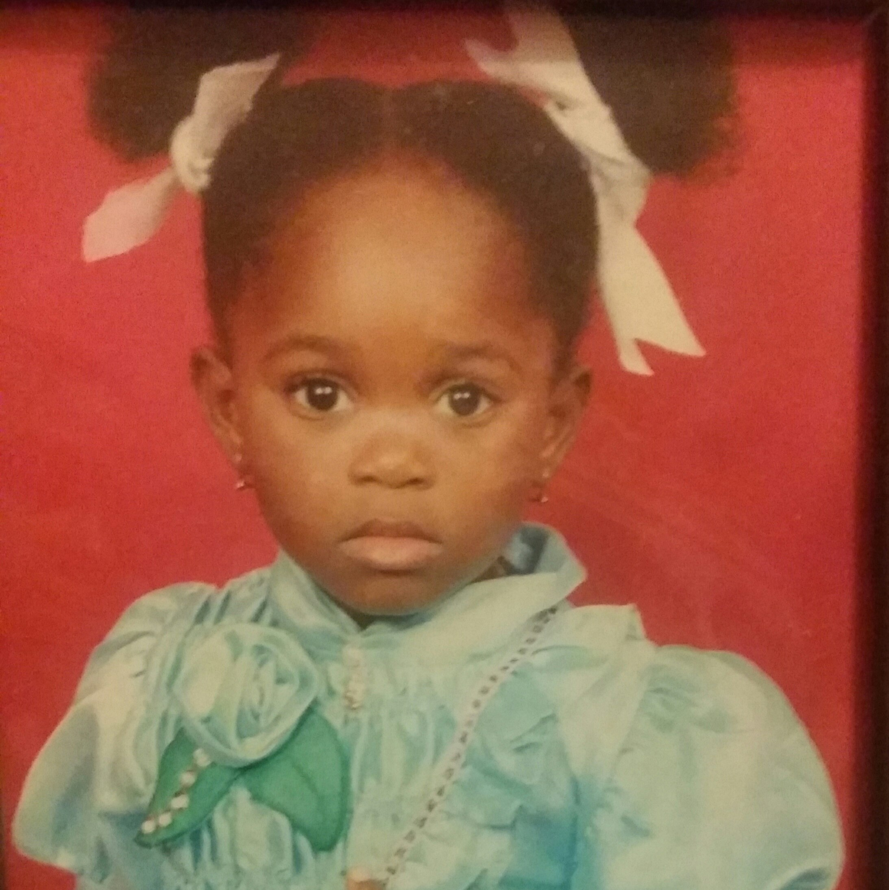
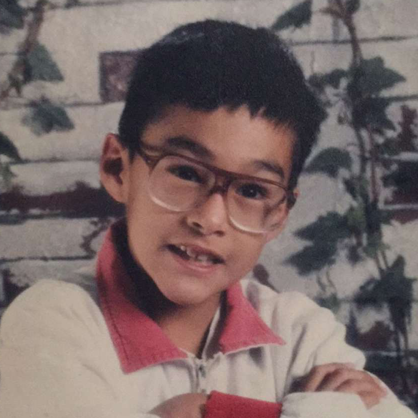

The Bride and Groom
Vannessa
 Vannessa has Ghanian roots, but she loves her hometown of Dallas. She loves losing herself in anything creative especially fashion and cooking. She loves being the oldest of four and enjoys doting on her siblings. Vannessa has a caring spirit and is a lifelong learner. that wears her heart on her sleeve.
Jorge
 Jorge is an El Paso native that is a huge fan of Texas sports teams especially the Cowboys, Texas Rangers and the Spurs. He is a former minor league pitcher and uses his competitive nature in his work environment. Jorge is a man that goes for what he wants, and because of that he is an all-natural salesman.
HOW WE MET
Jorge and Vannessa met in the spring of 2013 during basketball season. David, Robert and Henry were in town and they stopped into the sports bar that Vannessa was waitressing at. Monique-who was hostessing at the time sat the group in Vannessa’s section. Jorge joined the group later since he was coming from a rehab appointment for a minor car accident. When Jorge arrived he was full of obnoxious jokes. He asked Vannessa to show him around Dallas, but Vannessa politely declined as she had a boyfriend at the time and she saw Jorge as slightly annoying. David and Jorge quickly became regulars of the bar and Monique just happened to always seat the two in Vannessa’s section. Vannessa became single and Jorge started visiting the sports bar more frequently. Vannessa started looking forward to the slower nights because she was able to sit down at the table with Jorge and talk for hours. A beautiful friendship was blossoming. One day, Jorge brought his parents into the bar and Vannessa fell in love with the Juarez family dynamic. It was that day that she asked for his number. Vannessa ended up leaving that bar and worked at a neighboring sports bar as a bartender. It took Jorge a while to initially go visit but once he started visiting the bar, he became a loyal patron. Again, the two would talk for hours and oftentimes Jorge would close the bar down. Finally, Jorge mustered up the confidence and asked Vannessa to hangout after one of her shifts. Those that know Jorge knows that he is not a shy guy at all, but for some reason Vannessa made him nervous. Jorge loved how independent Vannessa was and how she was a woman that knew what she wanted. Vannessa loved his down-to earth nature, his caring heart, and his humor. They started hanging out for a few months as friends. Jorge would sometimes joke around that one day he was going to end up with someone like her- but Vannessa would always dismiss it. One day Vannessa mentioned that she was looking for a second job and Jorge helped Vannessa get an interview as a cocktail waitress. Vannessa was very grateful. Again, he would go visit her and sometimes bring his friends. One day, on her way to work to her second job Vannessa noticed that her tire was looking very flat. She stupidly drove on it since work was only 4 miles away. It just so happened that Jorge came in that night. Vannessa asked him if it were possible if he could drop her home. He politely agreed and agreed to take a look at the tire in the morning. After her shift, Jorge could tell that she was hungry and took her to IHOP. Classic! It was that night that they first kissed. The next day Jorge surprised Vannessa with anonymous flowers at her doorstep. He asked Vannessa to be his girlfriend and she said no. A couple weeks later he surprised her with a beautiful bouquet delivered to her job. This man- a born salesman- was not going to take no for an answer. After months of asking and sweeping her off of her feet in November of 2013, Vannessa finally said yes. And now on November 26, 2017 Vannessa is going to say yes to being Mrs. Juarez. And yes… Vannessa ended up showing Jorge around Dallas